HAKYKY WAGTDA ARAGATNAŞYK ULGAMY (MOBIL GÖRNÜŞI)
“Hakyky wagtda aragatnaşyk ulgamy (mobil görnüşi)”
Türkmenistanyň Oguz han adyndaky Inžener-tehnologiýalar uniwersitetinde taýýarlanan “Hakyky wagtda aragatnaşyk ulgamy (mobil görnüşi)” atly programma üpjünçiligi ýurdumyzda bar bolan islendik görnüşli (döwlet we hususy) edara-kärhanalar üçin niýetlenen.
Programma üpjünçiligi edara-kärhanalarda, esasan hem ýokary okuw mekdeplerde işgärleriň arasynda elektron resminama dolanyşygyny amala aşyrmak, hakyky wagtda hat alyş-çalyşmak, maglumatlaryňyzy toparlaýyn paýlaşmak üçin niýetlenen. Ulanyjylaryň, wezipelerine baglylykda özlerinden kiçi wezipeli kişileri toparlaýyn ýa-da ýekeleýin bloga salmak we blokdan açmak müminçilikleri bar. Programmany islendik wagtda dostlaryňyz we ýakynlaryňyz bilen paýlaşmak mümkin.
Programma üpjünçiligini Android operasion ulgamda bilen işleýän islendik gurluşlarda, mobil enjamlarda, tabletlerde, planşetlerde we ş.m. ulanmak bolýar.
Bu taýýarlanan programma üpjünçiligi kompýuter torunyň esasynda işleýär. Taýýarlanan programma üpjünçiligi Android Studio we Java programmirleme dilinde taýýarlanyldy we maglumatlar toplumy bilen işlemek üçin niýetlenen Oracle kompaniýasynyň MySQL programma üpjünçiligi ulanylýar.
Programma üpjünçiliginiň türkmen, iňlis we rus dillerinde interfeýsi bar.
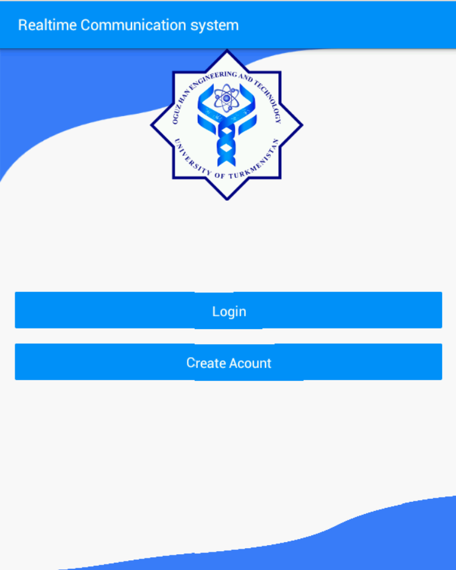
“Ulgama giriş penjire”
Eger sizde öňden ulanyjy adyňyz we gizlin belgiňiz ýok bolsa, onda “Hasap döretmek” bölüminde özüňize täze ulanyjy hasaby döredip bilersiňiz.
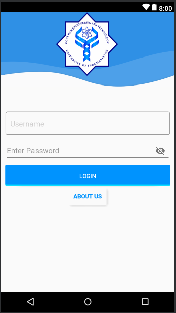
“Içeri giriş penjiresi”
Ulgama girmek üçin ilki bilen Içeri giriş penjiresinde ulanyjy adyňyzy we gizlin belgiňizi ýazyp “Içeri gir” düwmesine basmaly.
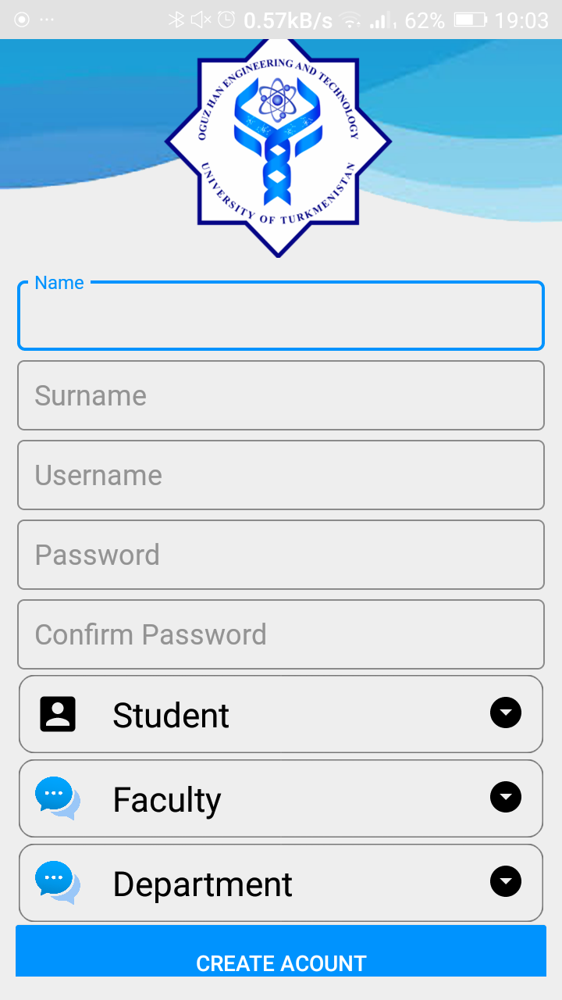
“Hasap döretmek penjiresi”
Hasap döretmek penjiresinde ulanyjy özüniň adyny, familýasyny, ulanyjy adyny açar sözüni girizmeli we ulanyjy görnüşini saýlamaly.
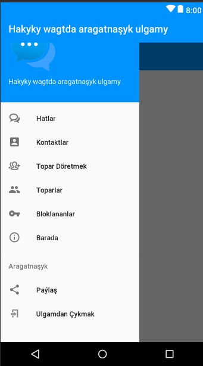
“Baş penjire”
Baş penjire Hatlar, Kontaktlar, Toparlar, Programma barada,Topar döretmek, Bloklananlar, Sazlamalar diýen 7 sany bölümi özünde jemleýär.
Hatlar bölüminde – häzirki wagtda maglumat alyş-çalyş edýän kişileriňiziň sanawy görünýär. Sanawdaky islendik kişiniň üstünde basmak arkaly şol kişi bilen maglumat alyş-çalyş penjiresini açyp bolýar. Bu penjirede iberilen we gelen maglumatlaryň sanawy görünýär.
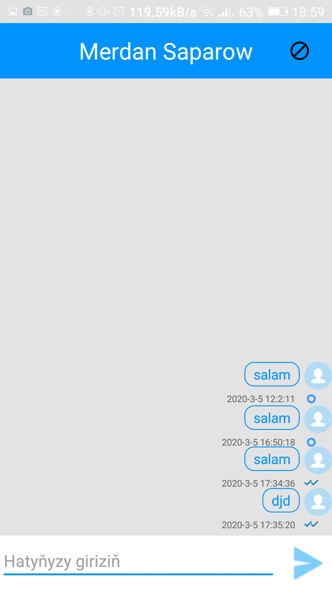
“Maglumat alyş-çalyş penjiresi”
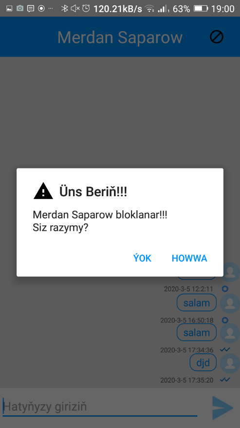
“Bloklamak penjiresi”
Ýokardaky bloklamak düwmesi arkaly bu ulanyjyny bloklap bileris.
Hatlar penjiresinde ulanyjylaryň ady we familiýasy, bölümi, bölümçesi, wezipesi, ulanyjynyň onlaýn bolup bolmadygyny aňladýan status çyrajygy görünýär.
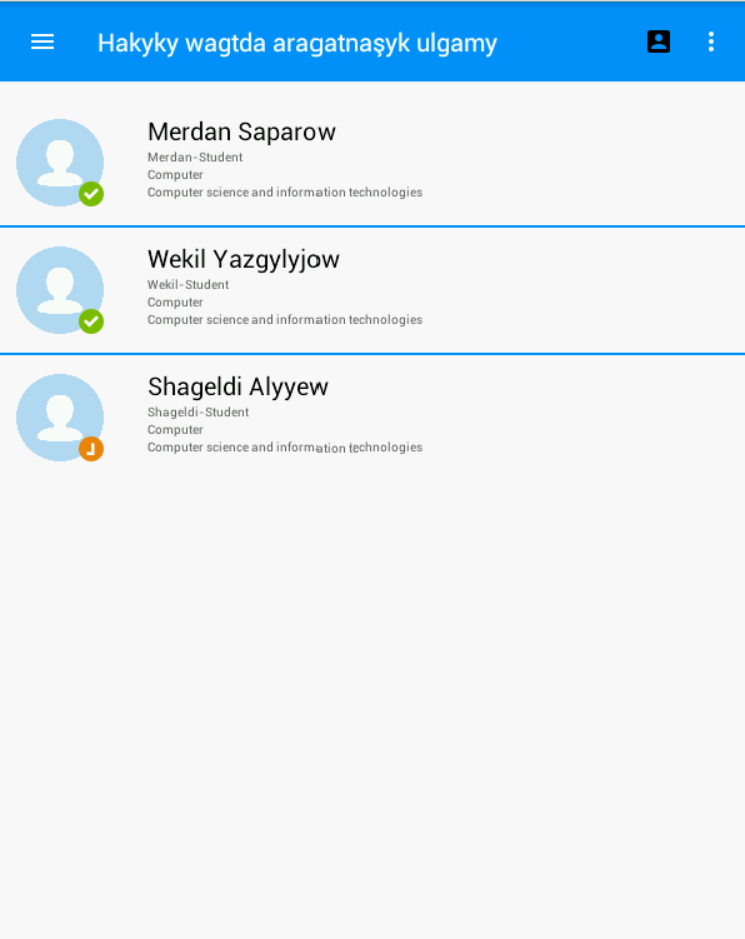
“Hatlar penjiresi”
Kontaktlar bölüminde – Ulgamda bar bolan ähli ulanyjylaryň sanawy görkezilýär. Sanawdaky islendik ulanyjynyň üstüne basanymyzda, eger öň ulanyjy hatlar penjiresiniň sanawynda ýok bolsa onda sanawa goşulýar we ulanyjy bilen maglumat alyş-çalyş penjiresi açylýar.
“Kontaktlar penjiresi”
Toparlar bölüminde – toparlary döretmek mümkin. Topar döretmek üçin topar döretmek penjiresinde toparymyza goşjak ulanyjylarymyz belläp we döretjek toparymyzyň adyny ýazyp “Topar döretmek” düwmesine basmak arkaly täze topar döredýäris.
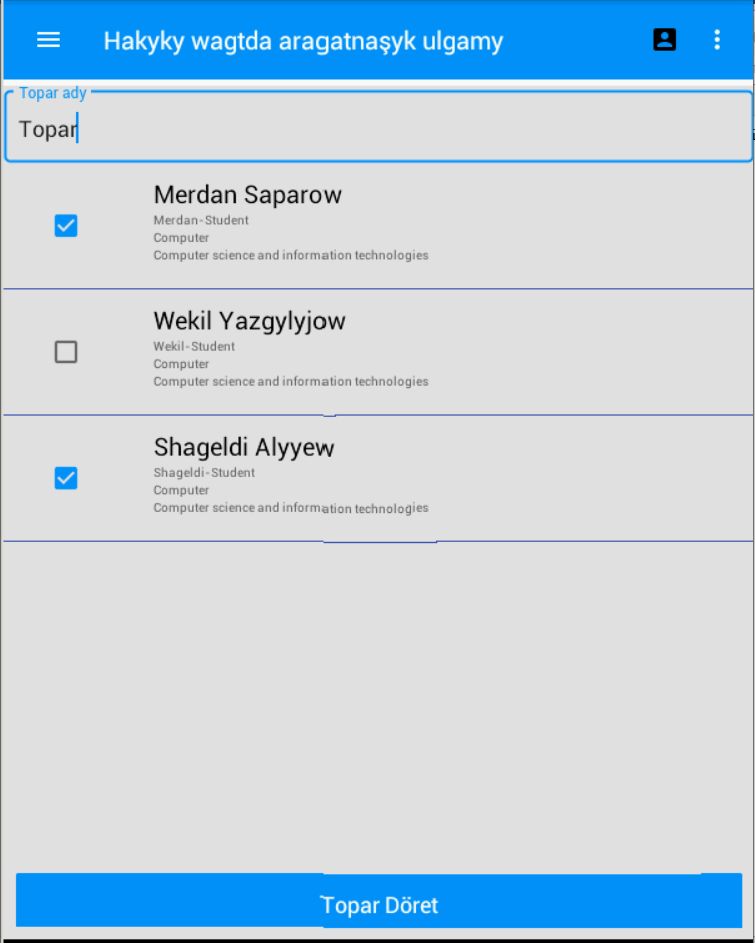
“Topar döretmek penjiresi”
Täze döredilen topar Toparlaryň sanawynyň penjiresinde peýda bolýar. Toparlar sanawynyň penjiresinde ähli özümiziň döreden ýa-da agza bolan toparlarymyzyň sanawy görünýär. Islendik toparyň üstüne basmak arkaly Toparlaýyn maglumat alyş-çalyş penjiresini açyp bolýar.

“Toparlaryň sanawynyň penjiresi”
Toparlaýyn maglumat alyş-çalyş penjiresinden islendik ulanyjy tarapyndan iberilen maglumatlar toparyň ähli agzalaryna gelip gowuşýar. Topary pozmak üçin ýa-da topardan çykmak üçin “Topardan çykmak” düwmesine basylýar we toparyň beýleki agzalaryna topardan çykanlygy barada habar berilýär. Eger-de toparda hiç-hili agza ulanyjy galmadyk ýagdaýynda topar awtomatik ýagdaýda düýbünden pozulýar.

“Toparlaýyn maglumat alyş-çalyş penjiresi”
Sazlamalar bölüminde – ulanyjylar programmanyň dilini saýlap biler. Programma üpjünçiligini üç dilde: türkmen, iňlis we rus dillerinde ulanmak mümkinçiligi bar.
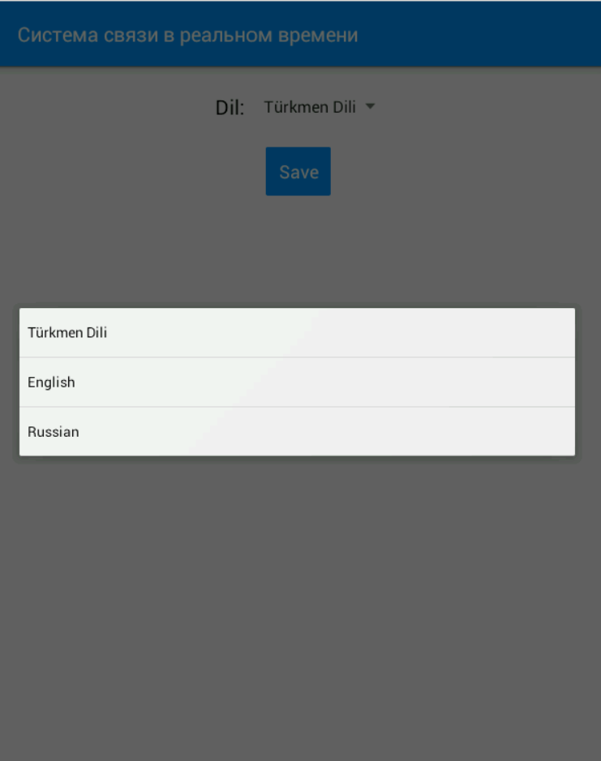
Sazlamalar penjiresi
- Bloklananlaryň penjiresinde size maglumat ibermek mümkinçiligi çäklendirilen ulanyjylaryň sanawy görünýär. Sanawda ulanyjylaryň maglumatlary we her ulanyjynyň gabadyndaky “Blokdan aç” düwmesini basmak arkaly ulanjynyň size maglumat iberip bilmek mümkinçiligini dikeldip bolýar.
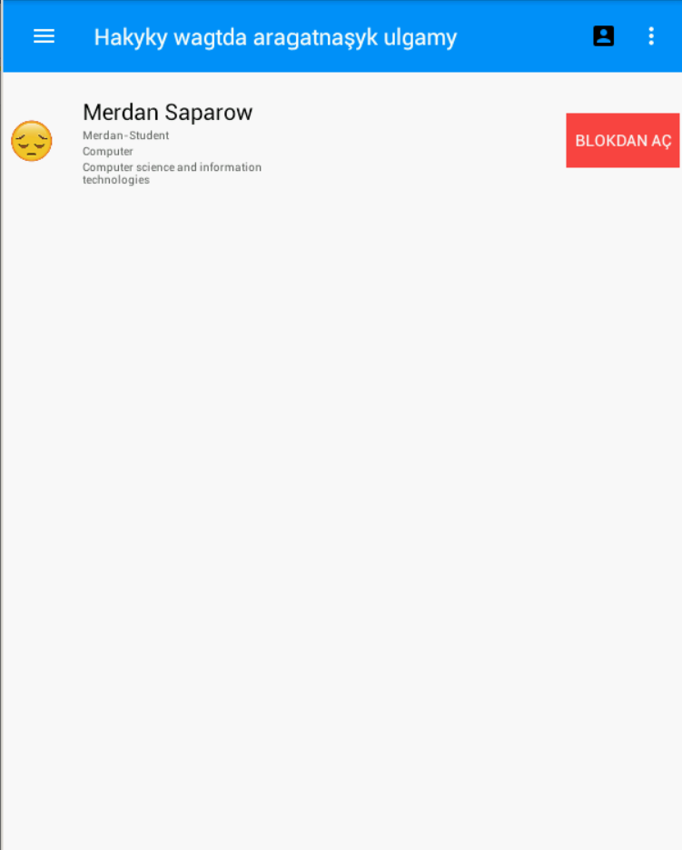
“Bloklananlaryň sanawynyň penjiresi”
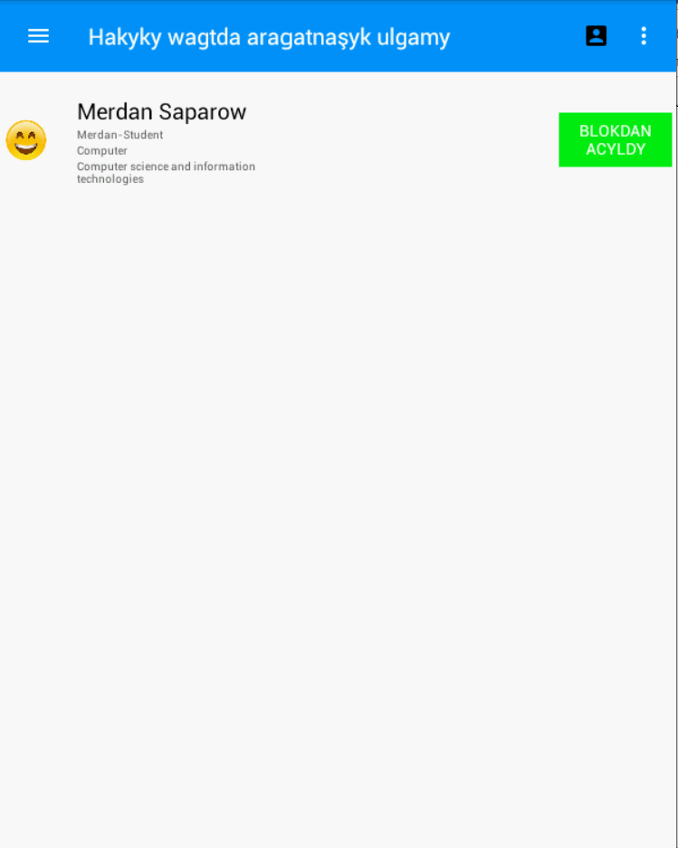
- Ulanyjynyň hasabynyň penjiresinde ulanyjy özüne degişli ähli maglumatlary görüp we üýtgedip bilýär.
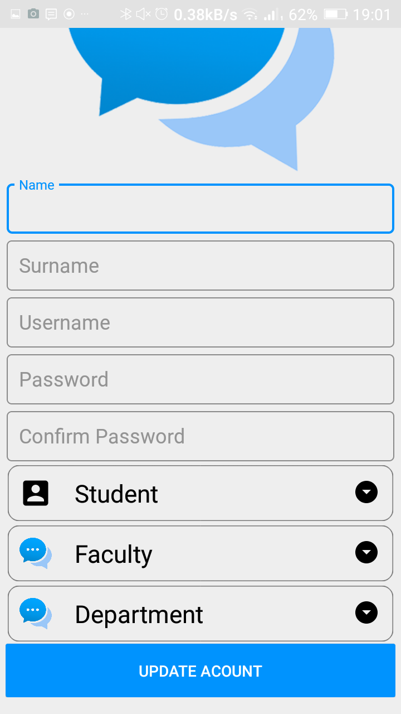
“Ulanyjynyň hasabynyň penjiresi”
Paýlaş düwmesine basmak arkaly ulanyjy bu programmany dostlary bilen paýlaşyp bilýär.
Ulgamdan çykmak düwmesine basanda ulanyjy ulgamdan çykýar. Ulanyjy Ulgama giriş ýa-da Içeri giriş pejiresine gelip täzeden ulgama girip biler.